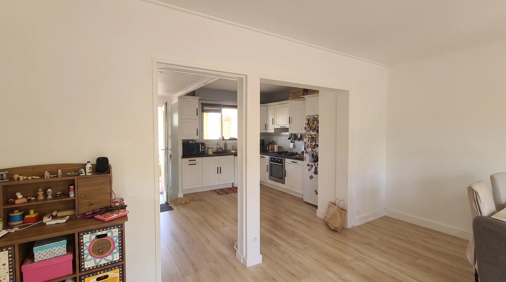
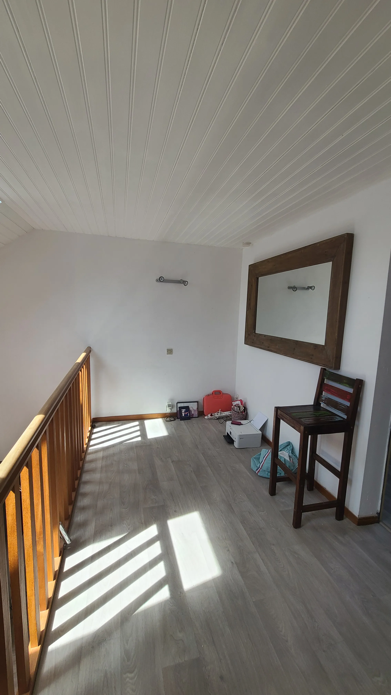
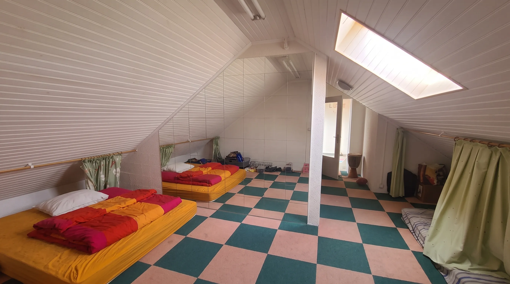
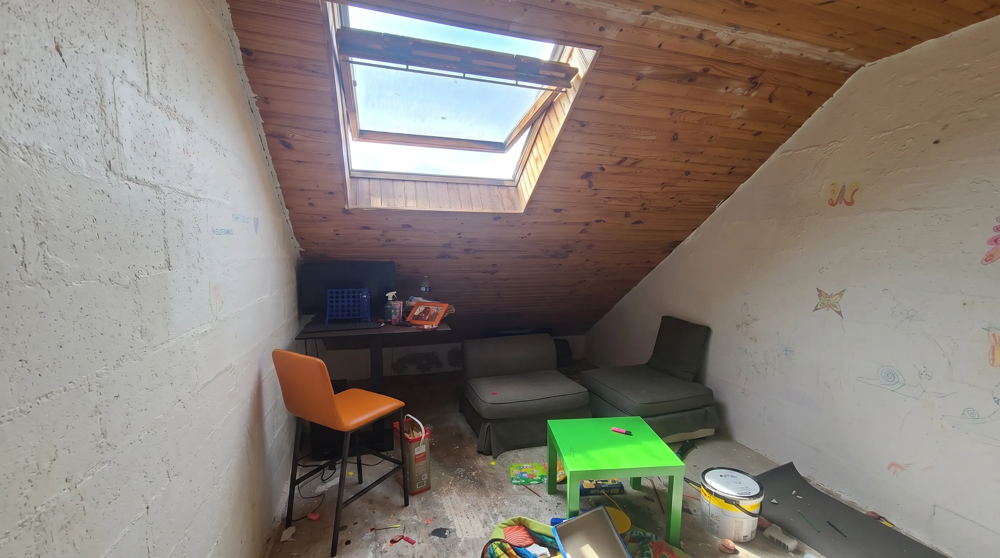
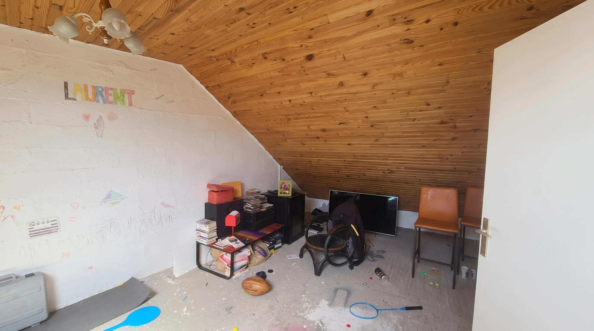

À Saint-Nazaire, les propriétaires de cet appartement avaient envie d’un lieu à leur image : vivant, coloré, singulier.
Un intérieur avec du caractère, où chaque espace affirme sa personnalité sans perdre le fil de l’ensemble.
L’enjeu était double : repenser l’organisation des volumes pour fluidifier le quotidien, tout en donnant une véritable identité à chaque pièce.
Des perspectives à créer, des usages à redéfinir, des aménagements à imaginer… et surtout, de la couleur à faire vivre !






La couleur structure et rythme les espaces. Dans la cuisine le bleu ciel pose l'identité d'un premier usage : un bar avec une verrière accordéon dessinée spécialement pour ce projet. Côté salon, l'atmosphère devient plus enveloppante : le kaki donne de la profondeur, le rose de la douceur et le mobilier apporte du relief et une touche de peps.
Chaque aménagement répond à un besoin précis. Le bar de la cuisine et sa verrière accordéon en sont l’illustration : un ensemble conçu sur mesure, qui structure l’espace tout en devenant un élément fort du projet. À l’étage, les rangements sous rampants exploitent les volumes disponibles pour créer un grand dressing parfaitement intégré. Des solutions pensées pour tirer parti de chaque recoin, sans sacrifier l’esthétique ni le confort.
Les couleurs offrent à la famille des espaces différents pensés pour se retrouver, jouer et grandir. La modularité occupe une place essentielle. Une pièce peut accueillir une salle de jeu et se transformer en chambre d’appoint. Un même espace, plusieurs usages, sans compromis sur le confort.






Avis clients

Nous avons consulté Alexandre pour notre projet de rénovation de notre appartement.
Il a su écouté nos envies et les rendre harmonieuses sur les plans 3D. Un très beau travail qui nous inspire et qui nous fait vibrer. Il ne reste plus qu’à passer à l’action !
Merci beaucoup pour ce beau projet
Je recommande Alexandre pour son professionnalisme et sa vision d’architecte !
Chaque projet résout un problème différent